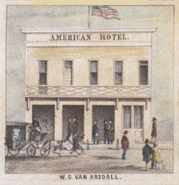
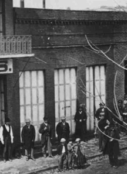

AMERICAN HOTEL.
1851-1857

© Bancroft Library.
(Main Street - 1855)

1851 P. B. Anthony owns the lot, there is a wood structure, the American Hotel.
1852 September - the lot is owned by Mr. W. J. Van Arsdall and his wife Mary W. G. Van Arsdahl from Michigan. Name sometimes spelled Vanarsdall. It has a one story frame building, and is still called the American Hotel, with a large dining room which is also used for dancing.
1853 One room of the hotel is used by William Daegener as the Wells Fargo office; another room houses the stage office of Kelty & Co.
1854 By this time the hotel is also the headquarters for the Columbia and Stanislaus River Water Co.
1854 July - the building is destroyed in the fire, it is rebuilt as a two story frame hotel, (see image above) tenants are: Wells, Fargo & Co., Kelty's stage line and Dr. J. J. Massey dentist.
1856 Daegener purchases the lot and the building from Mary W. G. Van Arsdahl. Rooms are rented to D. Green, S. Friedman had a store selling, among other things, kerosene and lamps.
1857 August 25 - The hotel burns in the fire, Daegener rebuilds of wood; later in the year he builds a second frame building on the lot housing Sturzenegger and Newman's saloon.

© Wells, Fargo & Co.
c1866 view of one story brick built 1858.
1858 Daegener replaces his wood structures with brick. The two story building cost $4400, the one story $2375. The Wells, Fargo office moves into the two story building, with the Daegener family living upstairs. Hostie has a store in the other building.
1860 T. A. Lynch takes over Hostie's store, runs a clothing business.
1862 Reese operates a watchmaking and jewelry store in the rental building.
1960 April - Zane Orr owns the concession and moves the coach from the City Hotel to present location by 1962.
1989 Davene Stoller buys the stagecoach concession.
1999 Davene Stoller looses bid on concession.
1999 June - Frank and Marshall Long are the stagecoach concessionaires. Known as the A. N. Fisher Stagecoach.
2006 August - Frank and Marshall Long sell out to Tom Fraser.
2006 Tom Fraser is the stagecoach concessionaire. Known as Quartz Mountain Stage Line & Saddle Horses.
2012 Parks renovate the inside interpretive design. Installed a new ADA counter.

© Jasper Hamilton.
Contact Information:
Quartz Mountain Stage Line &cetera
209 588-0808

This page is created for the benefit of the public by
Floyd D. P. Øydegaard
To make corrections, etc., contact:
fdpoyde3 (at) yahoo (dot) com
A WORK IN PROGRESS,
created for the visitors to the Columbia State Historic park.
© Columbia State Historic Park & Floyd D. P. Øydegaard.